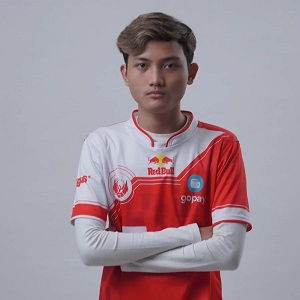

Nama BTR Ryzen yang mempunyai nama asli Muhammad Albi dengan panggilan Albi. Gamer PUBG Mobile terbaik asal Indonesia ini ternyata masih berusia 19 tahun dan lahir di Bogor, 14 Februari 2002. Itu berarti pada 2022 ini, BTR Ryzen sudah berusia 20 tahun. Awal karier Ryzen di esports ternyata bermula dari bisnis online-nya, yaitu jualan UC dan diamond game di Facebook. Sebelum ke Bigetron, Ryzen ternyata juga sempat ditawari tim RRQ. Seperti pro player pada umumnya, awalnya orang tua Ryzen sempat ragu dengan keputusannya berkarier di esports. Skill dan prestasi BTR Ryzen BTR Ryzen merupakan rusher di dalam tim Red Aliens yang sangat bagus, dengan julukan Super Manggis, ia bisa menghabisi seluruh musuh di hadapannya. Bersama Bigetron, BTR Ryzen sukses menjuarai PMCO Fall Split Sea dan PMPL Sea Finals. Ia diingat karena cukup sering melakukan clutch dengan sempurna, dan membuat tim nya WWCD. BTR Ryzen. (Instagram) BTR Ryzen. (Instagram) Berikut ini adalah deretan prestasi yang pernah dicatatkan BTR Ryzen: Juara 2 PMCO 2019 Spring Split: Sea Championship, Juara 2 Pubg Mobile Indonesia National Championship 2019, Juara 1 PMCO Fall Split 2019 : Sea League, Juara 1 PMCO 2019 Fall Split Global Finals, Juara 1 PMPL Spring Split 2020 Indonesia League, Juara 1 PMPL Spring Split 2020 Indonesia Finals, Juara 2 PMPL Spring Split 2020: SEA, Juara 1 PMWL East 2020 Season 0, Juara 1 PMPL Fall Split 2020 Indonesia League, Juara 1 PMPL Fall Split 2020 SEA.
-

Ryzen
Muhammad Albi (BTR Ryzen)